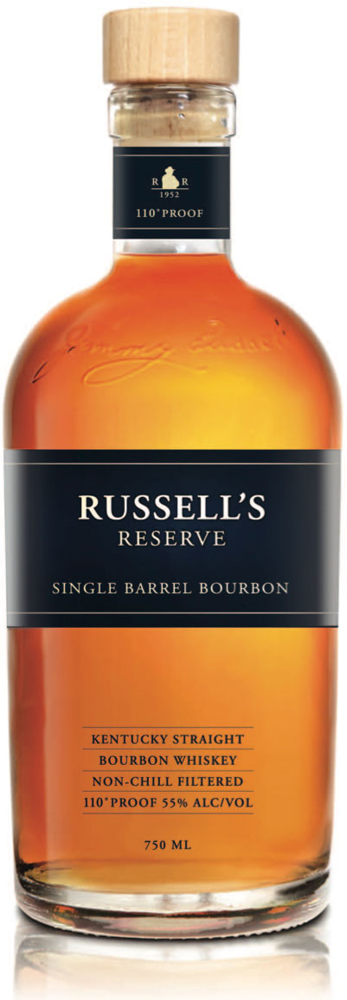

rachel
for design
Campari America
Freelance Creative Director and Editor. Video created for Campari America to promote Campari’s major brands: SKYY Vodka, Wild Turkey Bourbon, etc..

NoFeeDigs

NoFeeDigs Website
Co-founder of NoFeeDigs. Website (nofeedigs.com) designed to help people find no fee apartments in New York City. I was instrumental in business, design and product development, and created social media.
Visit website


NoFeeDigs Identity


Rapaport & JTav
David Rapaport, M.D. Website
Designed and created identity for Dr. David P. Rapaport, M.D. (Rapaport Plastic Surgery) including: logo, website, banners (for website and social media), business cards and letterheads, customized scrubs, water bottles and tote bags; set up all of Dr. Rapaport's social media accounts; as well as filmed and edited promotional videos for his YouTube channel.


David Rapaport, M.D. Identity


CoolSpa Fifth Avenue
Designed, created identity, and marking for CoolSpa Fifth Avenue (founded by Dr. David P. Rapaport, a Harvard/NYU trained plastic surgeon) including: logo, website, and promotion material (including male and female patient brochures, advertisements that were in New York Magazine, event invitations, water bottles, tote bags, refer-a-friend cards, etc.). CoolCab was a concept design for taking CoolSculpting to the next level-- on-the-go (an idea where one could comfortably enjoy CoolSculpting and a massage via CoolCab transportation from an airport to their hotel or vice versa).

CoolSpa Fifth Avenue


JTav Clinical Skincare Website
Designed and created website for Esthetician Joie Tavernise (JTav Clinical Skin Care); set up all of Joie's social media accounts; photographed Joie, her office and employees for website and promotional material; as well as filmed and edited a video to promote Joie's Ultherapy practice (for her website, Vimeo and YouTube channel).
Visit website


Russel's Reserve
Identity Concepts


- 


Photo/Video